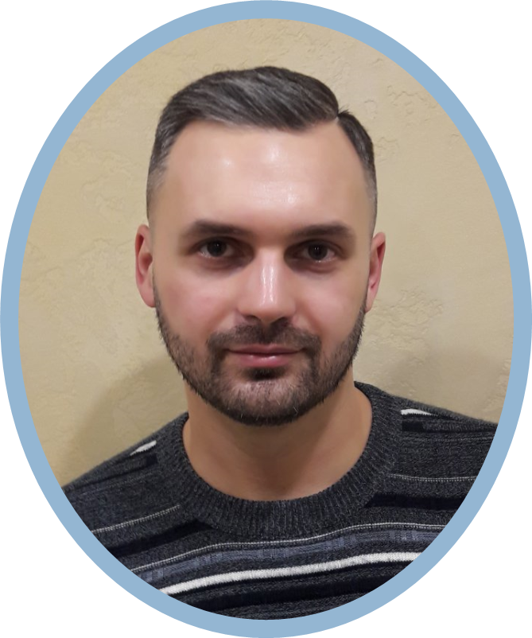

ABOUTTop performing IT professional with about 20 years’ successful experience in Information Technology field. Possess a Master of engineering degree. Proficient in hardware and software maintenance. A disciplined and analytical approach to development projects and the ability to work on your own with minimum supervision are my forte. As well I can learn and remember new information quickly. Software developing has been a huge part of my life and is something that I have continued to develop and grow over the years. I have love being able to travel to so many different places and make friends with people from so many different backgrounds. CONTACT INFORMATIONMOBILE:+375 (44) 754-31-62SKYPE:nikolay-kozlovE-MAIL:nike.my@rambler.ru |
MIKALAI KAZLOUSAP software developerEDUCATIONBelarusian National Technical University (BNTU). Magistracy Information Technologies and Robotics Faculty Automated information processing systems 2005 — 2006 Belarusian National Technical University Information Technologies and Robotics Faculty Automation of financial operations 2000 — 2005 WORK EXPERIENCEEPAM Systems Senior software engineer 2021 — present Unitary Enterprise A1 Senior software engineer 2010 — 2021 JV CJSC "MAZ-MAN" IT group manager 2008 — 2010 Software engineer 2004 — 2008 TECHNICAL SKILLS
PROFESSIONAL SKILLS
CODE EXAMPLES
TRAININGS
LANGUAGESEnglish: Intermediate (B1) |